Om Cyklisternes By
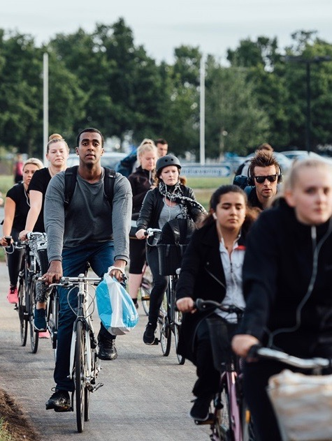
Cyklisternes By er placeret i By- og Kulturforvaltningen i Odense, og arbejdet med cyklisme tager sit afsæt i Odense Kommunes handlingsplan for mobilitet og byrum 2017-2024, som mange af de aktuelle projekter er en del af.
Cyklisternes By arbejder aktivt på at gøre cykelturen til et fast og ikke mindst positivt element i hverdagen. Den daglige tur på cykel skulle gerne være et pusterum i en ofte travl hverdag og altså ikke udelukkende et spørgsmål om at komme fra A til B.
Cyklisternes By går ikke ind for løftede pegefingre, men at det skal være sjovt og attraktivt at cykle i Odense
Nyheder
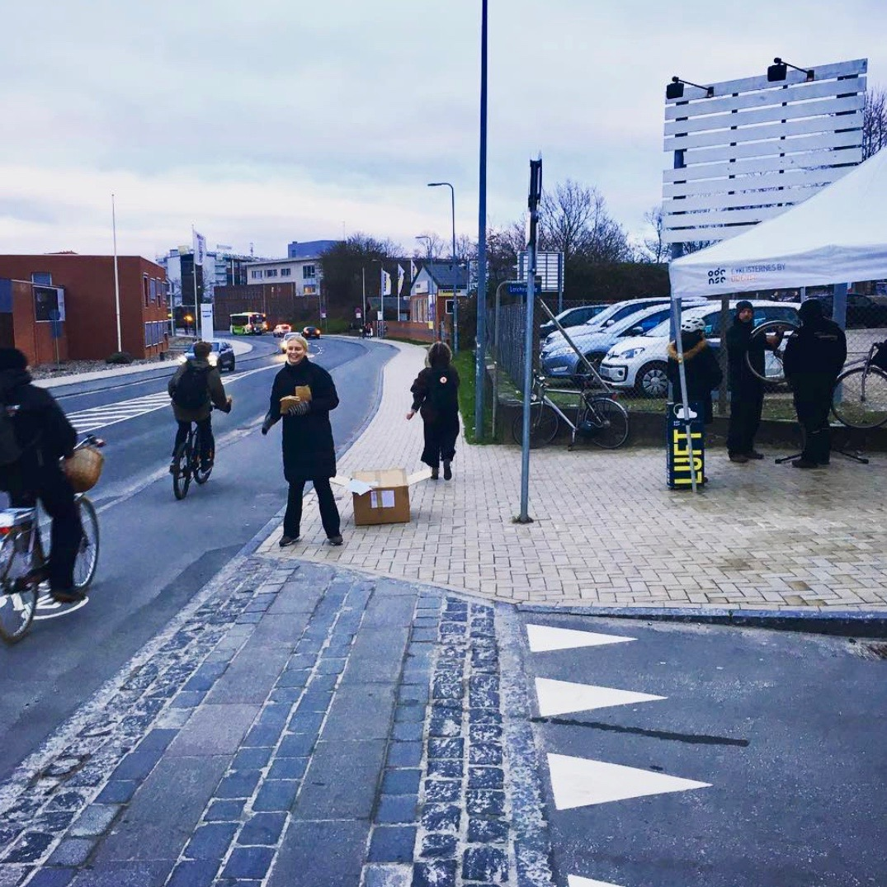
Fri cykelservice og supercyklist-goodiebags
I går var CyklisternesBy forbi supercykelstien på Ejlskovsgade med fri cykelservice og supercyklist-goodiebags. I dag fra kl.14.00 står vi mellem Rosengårdskolen og tunellen under Niels Bohrs Alle Så kom forbi de dygtige cykelsmede som tilbyder at smøre og stramme din kæde samt pumpe din cykel. Eller vær en af de 500 heldige der får fingrene i en supercyklist-goodiebag
Cyklisternes By går ikke ind for løftede pegefingre, men at det skal være sjovt og attraktivt at cykle i Odense
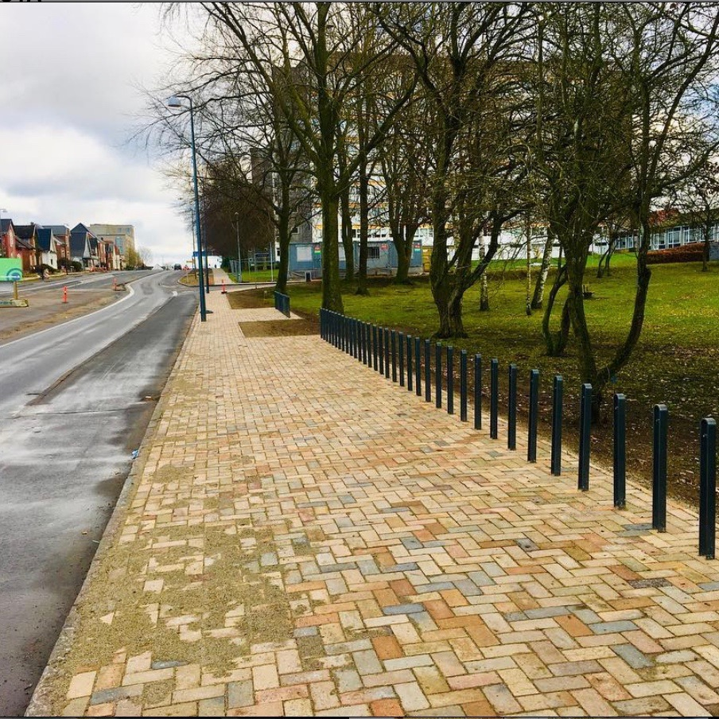
Der er bygget ny cykelparkering til den kommende letbane.
Har du været forbi Nyborgvej for nylig? Der er bygget ny cykelparkering til den kommende letbane. Rundt i Odense kommer knap 2000 cykelstativer ved letbanestationerne. I øvrigt må du også tage cyklen med i letbanen!
Alt sammen så du får muligheden for at kombinere cyklen og letbanen.
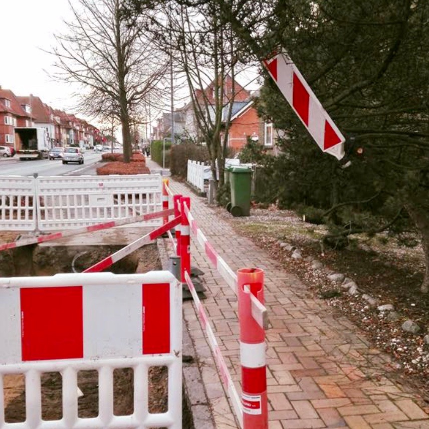
Op på fortovet med din cykel på Hjallesevej
Vi er i vejen på Hjallesevej, hvor du flere steder må op på fortovet med din cykel. Vi graver, fordi vi er ved at gøre klar til nye vejtræer flere steder. Så i løbet af foråret bliver din cykeltur på Hjallesevej lidt grønnere med træer, stauder og bøgehæk
Kort
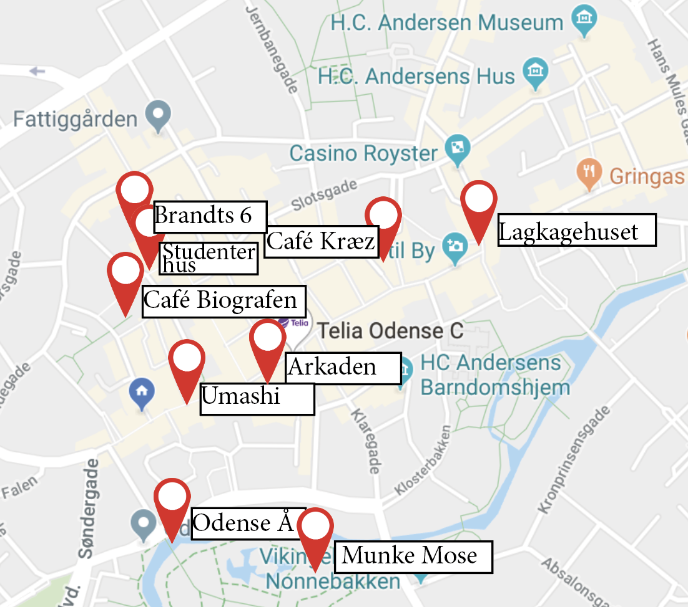
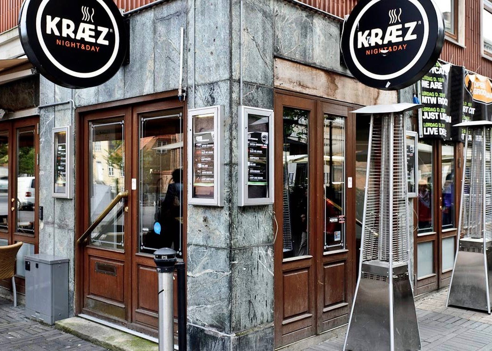
Café Kræz
Café Kræz har i den grad også taget hensyn til byens studerende, som de giver 20 procent rabat .Deres domæne er café-retter og velbrygget kaffe, men er heller ikke blege for at byde op til dans i måneskin. Hver fredag og lørdag nat smækker de natklubattituden på og serverer cocktails og musik for de gæster, der de dage minimum skal være fyldt 20 år.
Café Kræz ligger i Gråbrødre Plads 6
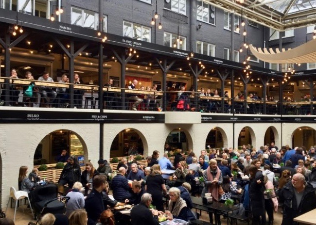
Arkaden
I Arkaden Food Market kan du nyde streetfood-inspireret mad og drikke fra alle verdenshjørner. I Arkaden kan du også billigt få slukket tørsten. I Arkadens Food Market er der nemlig tre forskellige barer med alt fra kaffe til cocktails, hvor du som studerende får 15 procent rabat.
Arkaden ligger i Vestergade 68
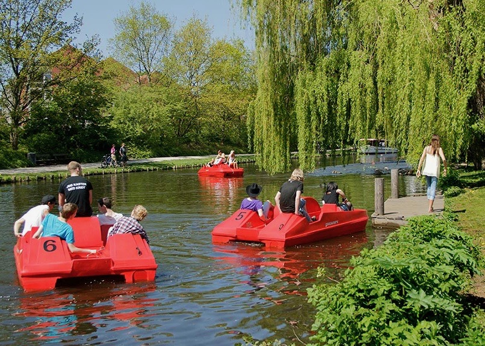
Odense Å
Sejlturen med Aafartens turbåd er helt fantastisk. Men der er nu også noget helt særligt ved at sejle alene på åen i en vandcykel. Hvis I er ude efter en romantisk tur med madkurv, en sjov tur med vennerne, en polterabend eller blot vil sejle alene på åen, så kan I leje en af vores vandcykler. Det er en hyggelig og afslappende måde at tilbringe en time eller måske flere timer en lun sommerdag.
Umashi
Umashi tilbyder studerende 20 procent rabat på takeaway-sushi, hvis det afhentes i den japanske restaurant.
Umashi ligger i Vestergade 92
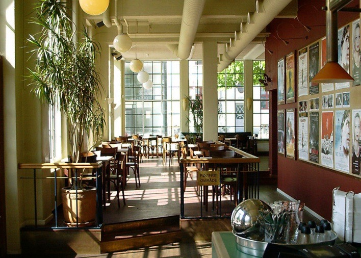
Café Biografe
Café Biografen er en lys og stemningsfuld cafe med tre tilhørende biografsale. Salene er små og intime, og det giver den hyggeligste biografoplevelse. Man kan som studerende få 10 kroners rabat på biografbilletterne.
Café Biografen ligger på Amfipladsen 13
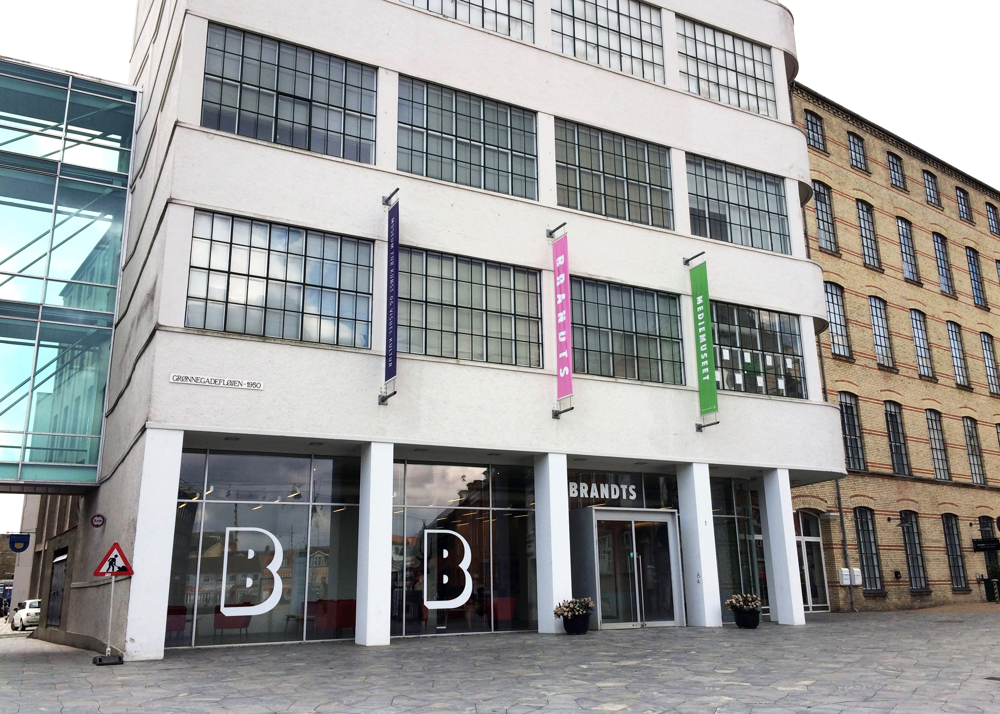
Brandts
Brandts er Odenses museum for kunst og visuel kultur. Hver torsdag har de gratis entre mellem 17 og 21, så der er rig mulighed for at dykke ned i deres udstillinger.De har blandt andet lige åbnet deres science fiction-udstilling Into the Unkown.
Brandts ligger på Brandts Torv 1
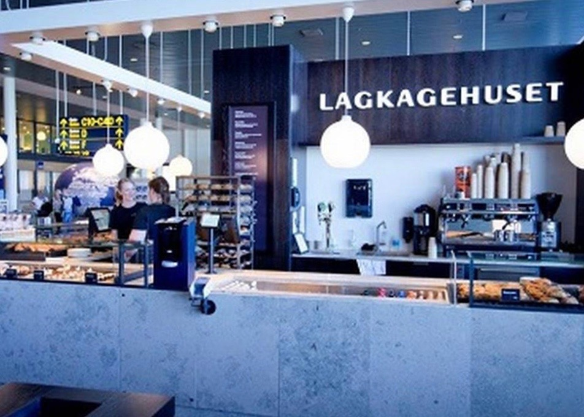
Lagkagehuset
Lagkagehuset giver 30 procent studierabat på deres varme drikke. Det indbefatter altså alle deres kaffe- og kakaovarianter. Så skal du gå en lang tur i efterårsvejret, er det både billigt og nemt at nuppe en to go-kop med i hånden.
Lagkagehuset ligger i Vestergade 1
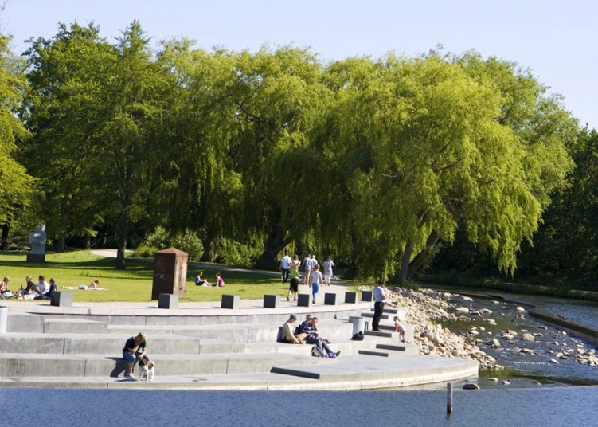
Munke mose
Munke mose er en af Odenses mange parker. Men munke mose er også blevet et samlings sted for de mange studeren i Odense lige så snart solen skinner. Du kan ligge dig og slikke sol, grille, drikke øl eller hvad du nu har lyst til.
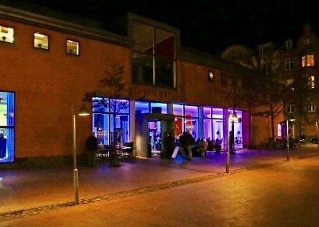